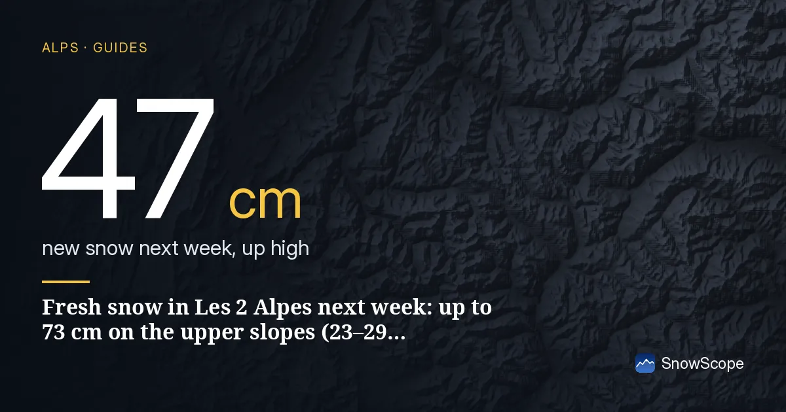

Fresh snow in Les 2 Alpes next week: up to 73 cm on the upper slopes (23–29 November 2026)
Wednesday 25 November is the day to circle for Les 2 Alpes. It carries the biggest single share of next week's snow, and over the whole week of 23–29 November the top around 3200 m collects 47 cm (20–73 cm) while the base gets 14 cm.
See the live snow forecast for Les 2 Alpes in the SnowScope appSnow depth, powder alerts and the 3D map, free.
First, this week's snow
Before next week even starts, Les 2 Alpes should be holding a deep fresh layer up high: 85 cm from Tuesday 17 to Friday 20 November (57–112 cm), while the base sees 4 cm. The second storm then builds on it.

Next week, height by height
Read from the top down: 47 cm near 3200 m, 41 cm near 2400 m, 14 cm near 1300 m. The low-to-high spread is 20–73 cm at the top and 4–22 cm at the base.
Most of the total arrives on Tuesday 24 (8 cm, up to 11), Wednesday 25 (16 cm, up to 22), Thursday 26 (10 cm, up to 14) and Sunday 29 (10 cm, up to 21), counted at the top as the middle of our forecast and the high case.
Snow or rain at the bottom?
Don't judge Les 2 Alpes from the village. With 14 cm at the bottom and 47 cm at the top, the lower runs are near or under the snow line, and much of what falls there may be rain.
Les 2 Alpes is built upside down: the best snow is at the top and the trickiest home run at the bottom.
How nearby resorts compare
At the top, next week, our forecast gives La Grave (10 km away) 49 cm, Alpe d'Huez (13 km away) 40 cm and Serre Chevalier (33 km away) 47 cm, against 47 cm here.
Nothing to separate them on snow alone; the choice comes down to the terrain you want.
Picking your day in Les 2 Alpes
Aim for the day after Wednesday 25 November. That day brings the biggest share at the top (16 cm, high case 22 cm), and the first clear morning after it gives the softest snow with some visibility.
Go high: depth is safest on the Mont-de-Lans glacier at the top of the lifts, and the best skiing should be on the glacier and the wide slopes just below it. Treat the steep lower runs back to the village, which face the afternoon sun as the weak point.
Confidence, in plain words
Medium. Our range at the top runs from 20 to 73 cm, so the storm is likely but its size is not settled. Take the middle value as a guide, not a promise.
We will refresh these numbers every day; the resort page carries the latest version.
Tips for skiers
- Before leaving the pistes in Les 2 Alpes, check the French avalanche bulletin (BERA) for the massif.
- Early season: confirm which lifts are open with Les 2 Alpes itself before you travel.
- Ride up for the snow: the base gets 14 cm, the top 47 cm.
More maps (external sites)
About these numbers
Snow numbers: our two-week snow forecast issued on 16 November 2026, read at three heights of the resort (top, mid-mountain, base). Each total is the middle of a range, with a low and a high case. These are estimates for the slopes, not resort measurements, and forecasts move from day to day: check the live map before you go.
Cite this report
For research, teaching or the press: the numbers and charts are free to reuse under CC BY 4.0 with this citation.
SnowScope (2026), Fresh snow in Les 2 Alpes next week: up to 73 cm on the upper slopes (23–29 November 2026), https://snowscope.app/blog/en/2026/11/les-2-alpes-powder-forecast-next-week-23-29-november-2026.html, accessed 2026-11-16
SnowScope (Atlas Labs). (2026, November 16). Fresh snow in Les 2 Alpes next week: up to 73 cm on the upper slopes (23–29 November 2026). SnowScope snow reports. https://snowscope.app/blog/en/2026/11/les-2-alpes-powder-forecast-next-week-23-29-november-2026.html
BibTeX
@misc{snowscope2026les2alpespowderforecastn,
author = {{SnowScope (Atlas Labs)}},
title = {Fresh snow in Les 2 Alpes next week: up to 73 cm on the upper slopes (23–29 November 2026)},
year = {2026},
month = nov,
howpublished = {\url{https://snowscope.app/blog/en/2026/11/les-2-alpes-powder-forecast-next-week-23-29-november-2026.html}},
note = {Published 2026-11-16 11:24 UTC; accessed 2026-11-16}
}· CC BY 4.0 · Methods, data and tools →
Les 2 Alpes: snow and temperature by height, this winter vs last (tools) →
Follow Les 2 Alpes
Free: a message when fresh snow is coming, and the forecast every morning.
More snow reports

From 20 EUR on an opening weekend to 6-day passes before Christmas: a calendar of the cheapest early-season ski deals in the Alps for 2026, with the snow you can expect.

On 4 November, Les Deux Alpes has 45 centimetres at the summit but zero at the base—an extreme early-season height gap.

Ten European ski resorts ranked for December value, led by Les 2 Alpes with 75 cm of mid-mountain snow.